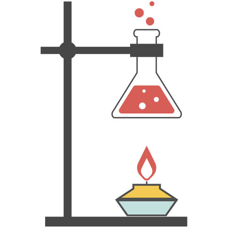

La química analítica estudia y utiliza instrumentos y métodos para separar, identificar y cuantificar la materia.1 En la práctica, la separación, identificación o cuantificación puede constituir el análisis completo o combinarse con otro método. La separación aísla los analitos. El análisis cualitativo identifica los analitos, mientras que el análisis cuantitativo determina la cantidad o concentración numérica.

Historia
La química analítica ha sido importante desde los primeros días de la química, ya que proporciona métodos para determinar qué elementos y sustancias químicas están presentes en la muestra en cuestión. Durante este período, las contribuciones significativas a la química analítica incluyen el desarrollo del análisis elemental sistemático por Justus von Liebig y el análisis orgánico sistematizado basado en las reacciones específicas de los grupos funcionales.
El primer análisis instrumental fue la espectrometría de emisión de llama desarrollada por Robert Bunsen y Gustav Kirchhoff, quien descubrió el rubidio (Rb) y el cesio (Cs) en 1860.3
La mayoría de los principales desarrollos en química analítica tuvieron lugar después de 1900. Durante este período, el análisis instrumental se vuelve progresivamente dominante en el campo. En particular, muchas de las técnicas espectroscópicas y espectrométricas básicas se descubrieron a principios del siglo xx y se refinaron a finales del siglo xx.4
Las ciencias de la separación siguen una línea temporal similar de desarrollo y también se transforman cada vez más en instrumentos de alto rendimiento.5 En la década de 1970, muchas de estas técnicas comenzaron a usarse juntas como técnicas híbridas para lograr una caracterización completa de las muestras.
Comenzando aproximadamente en la década de los 70 hasta la actualidad, la química analítica se ha ido haciendo cada vez más inclusiva de las cuestiones biológicas (química bioanalítica), mientras que anteriormente se había centrado en gran medida en moléculas orgánicas inorgánicas o pequeñas. Los láseres se han utilizado cada vez más en la química como sondas e incluso para iniciar e influir en una amplia variedad de reacciones. A finales del siglo xx también se observó una expansión de la aplicación de la química analítica de las cuestiones químicas académicas a las cuestiones forenses, ambientales, industriales y médicas, como en la histología.6
La química analítica moderna está dominada por el análisis instrumental. Muchos químicos analíticos se centran en un solo tipo de instrumento. Los académicos tienden a centrarse en nuevas aplicaciones y descubrimientos o en nuevos métodos de análisis. El descubrimiento de un químico presente en la sangre que aumenta el riesgo de cáncer sería un descubrimiento en el que podría estar involucrado un químico analítico. Un esfuerzo por desarrollar un nuevo método podría implicar el uso de un láser sintonizable para aumentar la especificidad y la sensibilidad de un método espectrométrico. Muchos métodos, una vez desarrollados, se mantienen deliberadamente estáticos para que los datos puedan compararse durante largos períodos de tiempo. Esto es particularmente cierto en el aseguramiento de la calidad industrial (QA), aplicaciones forenses y ambientales. La química analítica desempeña un papel cada vez más importante en la industria farmacéutica donde, además del control de calidad, se utiliza en el descubrimiento de nuevos candidatos a fármacos y en aplicaciones clínicas donde la comprensión de las interacciones entre el fármaco y el paciente es fundamental.
Métodos clásicos
La presencia de cobre en este análisis cualitativo está indicada por el color verde azulado de la llama.
Aunque la química analítica moderna está dominada por la instrumentación sofisticada, las raíces de la química analítica y algunos de los principios utilizados en los instrumentos modernos provienen de técnicas tradicionales, muchas de las cuales aún se utilizan en la actualidad. Estas técnicas también tienden a formar la columna vertebral de la mayoría de los laboratorios educativos de química analítica de pregrado.
Análisis cualitativo
Un análisis cualitativo determina la presencia o ausencia de un compuesto en particular, pero no la masa o la concentración. Por definición, los análisis cualitativos no miden la cantidad.